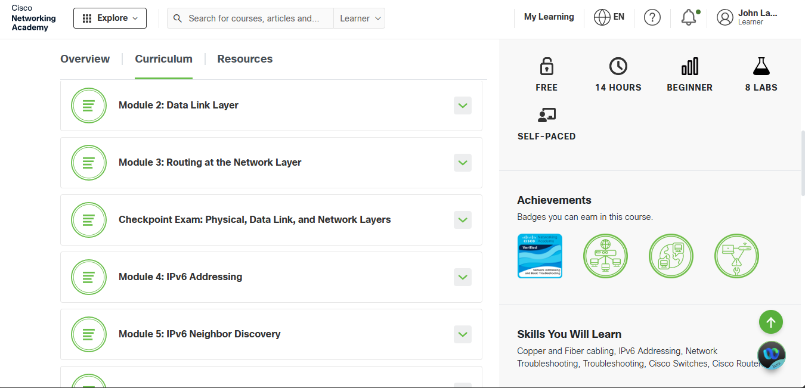
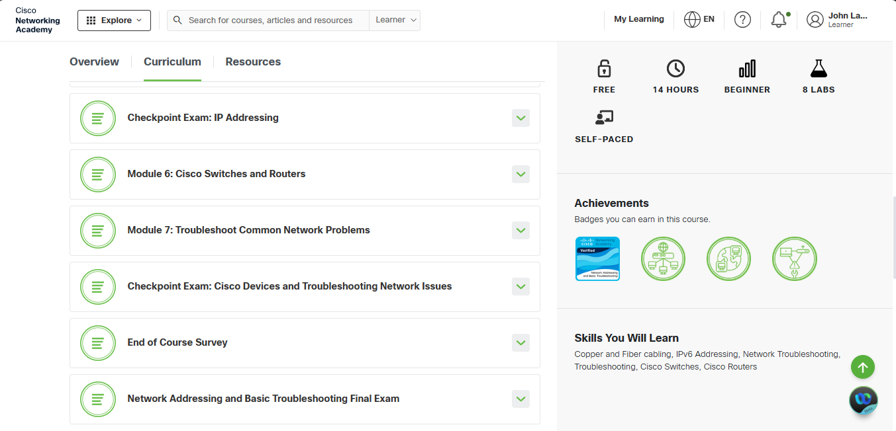
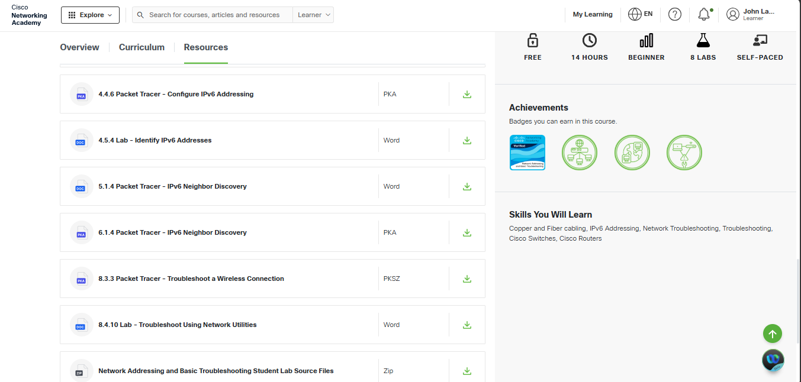
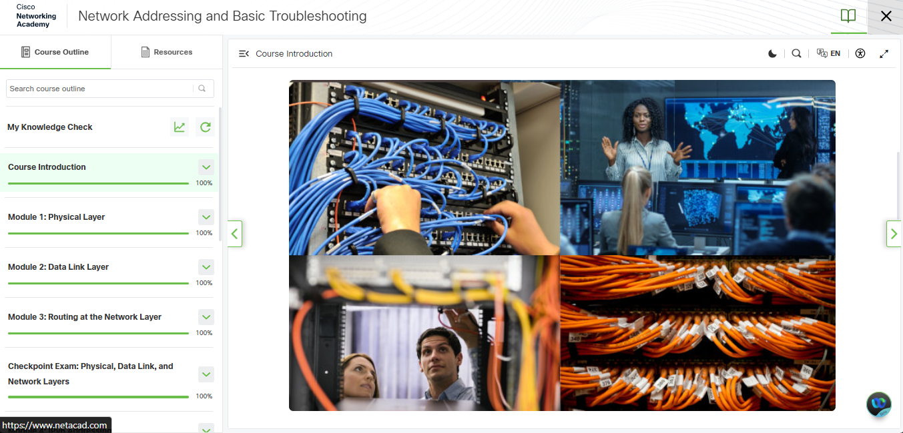
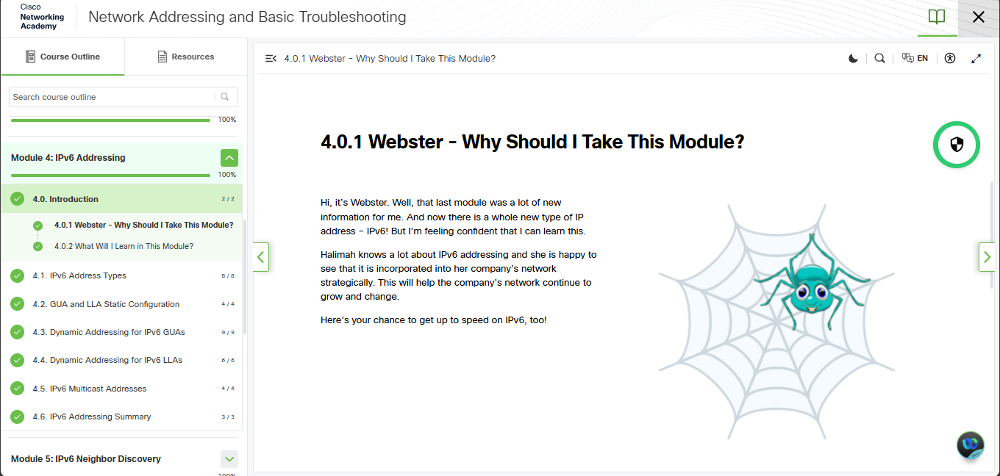
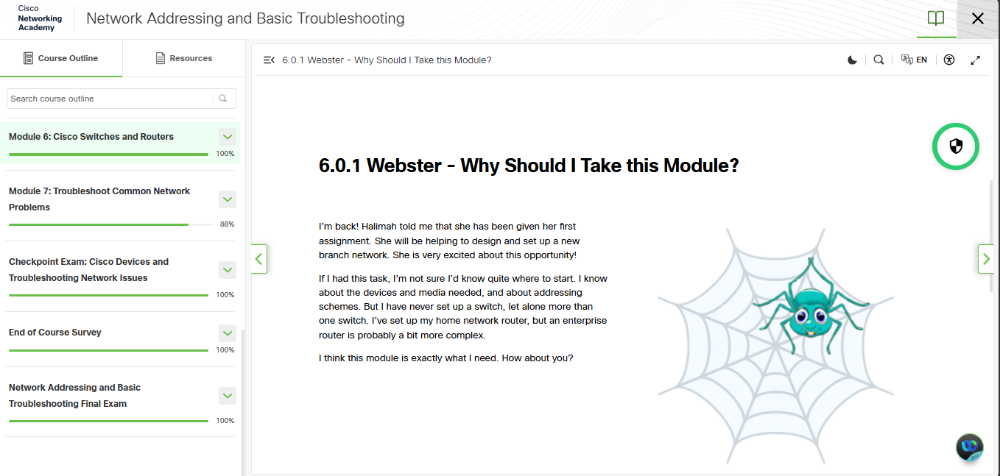
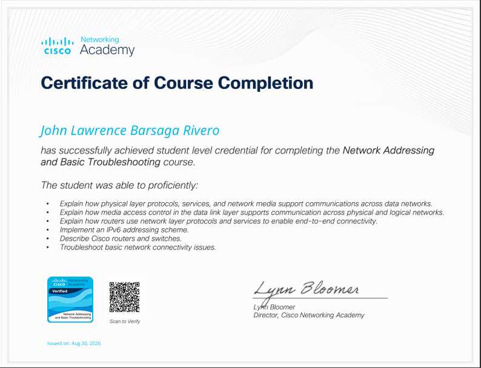
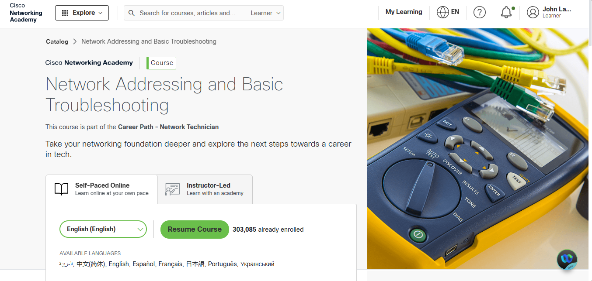

LEARNINGS






BADGE & CERTIFICATE

View PDF.png) Verify My Badge
Verify My Badge

I completed the Network Addressing and Basic Troubleshooting course from Cisco Networking Academy on August 30, 2026. This course helped me understand the basic concepts of computer networking, network addressing, and how to troubleshoot common network problems.
During the course, I learned about the physical layer, data link layer, and network layer. I learned how network devices communicate with each other and how different types of network media, such as cables, are used to connect devices. I also learned about IPv4 and IPv6 addressing and how routers and switches help provide communication between devices on a network.
The course also included different modules, activities, laboratory exercises, and assessments. I was able to practice using Cisco Packet Tracer and learned how to configure and troubleshoot network devices. These activities helped me understand the lessons better because I was able to apply the concepts through hands-on practice.
One of the most useful parts of the course was learning how to troubleshoot common network problems. I learned how to identify possible causes of connection issues and use basic network utilities and troubleshooting steps to find solutions. This helped me become more familiar with how network problems can be analyzed and resolved.
Overall, completing this course was a valuable learning experience for me. I gained useful knowledge about networking, addressing, Cisco devices, and troubleshooting that I can apply to my studies and future IT projects. It also gave me more confidence in understanding how computer networks work and how to solve basic networking problems.







View PDF
Verify My Badge